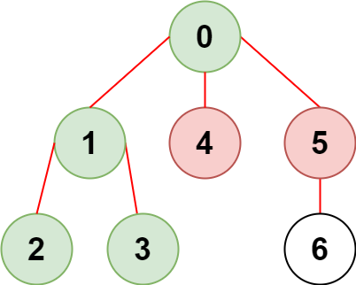
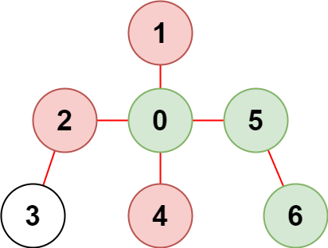

| Category | Difficulty | Likes | Dislikes |
|---|---|---|---|
| Algorithms | Medium | 768 | 32 |
array | hash-table | tree | depth-first-search | breadth-first-search | union-find | graph
makemytrip
There is an undirected tree with n nodes labeled from 0 to n - 1 and n - 1 edges.
You are given a 2D integer array edges of length n - 1 where edges[i] = [ai, bi] indicates that there is an edge between nodes ai and bi in the tree. You are also given an integer array restricted which represents restricted nodes.
Return the maximum number of nodes you can reach from node 0 without visiting a restricted node.
Note that node 0 will not be a restricted node.
Example 1:

Input: n = 7, edges = [[0,1],[1,2],[3,1],[4,0],[0,5],[5,6]], restricted = [4,5]
Output: 4
Explanation: The diagram above shows the tree.
We have that [0,1,2,3] are the only nodes that can be reached from node 0 without visiting a restricted node.Example 2:

Input: n = 7, edges = [[0,1],[0,2],[0,5],[0,4],[3,2],[6,5]], restricted = [4,2,1]
Output: 3
Explanation: The diagram above shows the tree.
We have that [0,5,6] are the only nodes that can be reached from node 0 without visiting a restricted node.
Constraints:
2 <= n <= 105edges.length == n - 1edges[i].length == 20 <= ai, bi < nai != biedges represents a valid tree.1 <= restricted.length < n1 <= restricted[i] < nrestricted are unique.